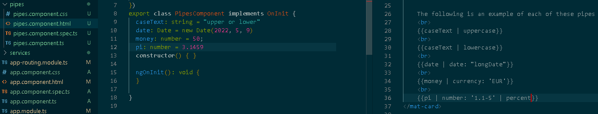

Pipes are essentially a means to perform string formatting on interpolated data without adding code to your model.
According to angular.io/guide a few Commonly used pipes include:
-
UpperCasePipe Transforms text to all upper case.
-
LowerCasePipe Transforms text to all lower case.
-
DatePipe Formats a date value according to locale rules.
-
CurrencyPipe Transforms a number to a currency string, formatted according to locale rules.
-
DecimalPipe Transforms a number into a string with a decimal point, formatted according to locale rules.
-
PercentPipe Transforms a number to a percentage string, formatted according to locale rules.
The following is an example of each of these pipes in action:

{{caseText | uppercase}}
{{caseText | lowercase}}
{{date | date: "longDate"}}
{{money | currency: 'EUR'}}
{{pi | number: '1.1-5' | percent}}